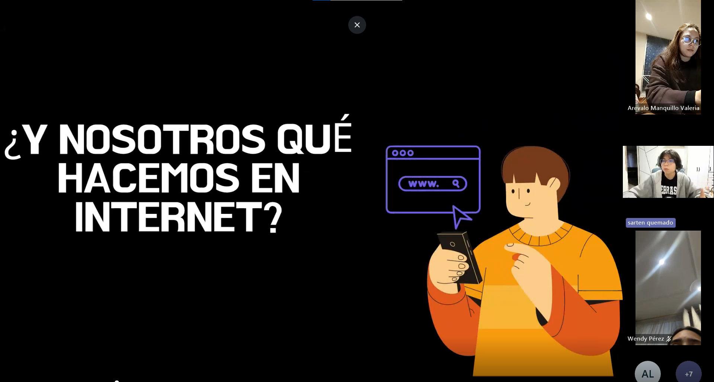
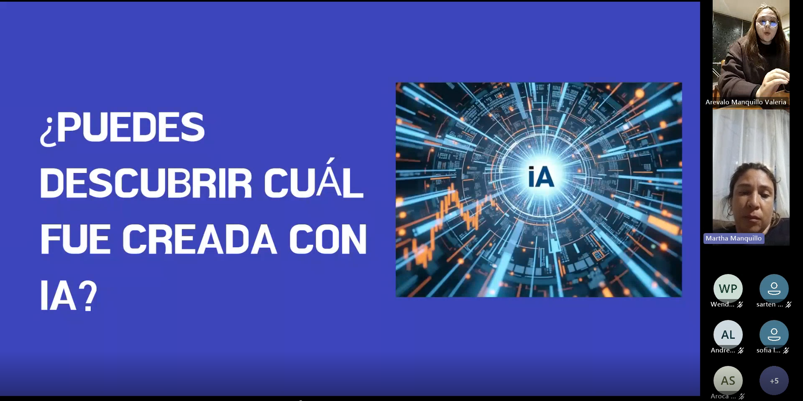
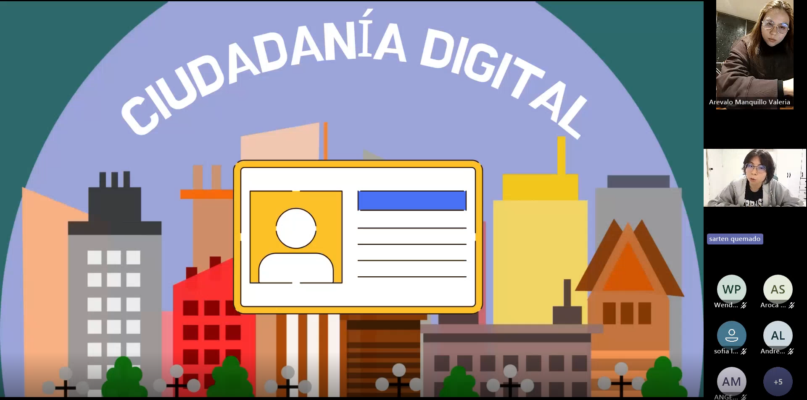
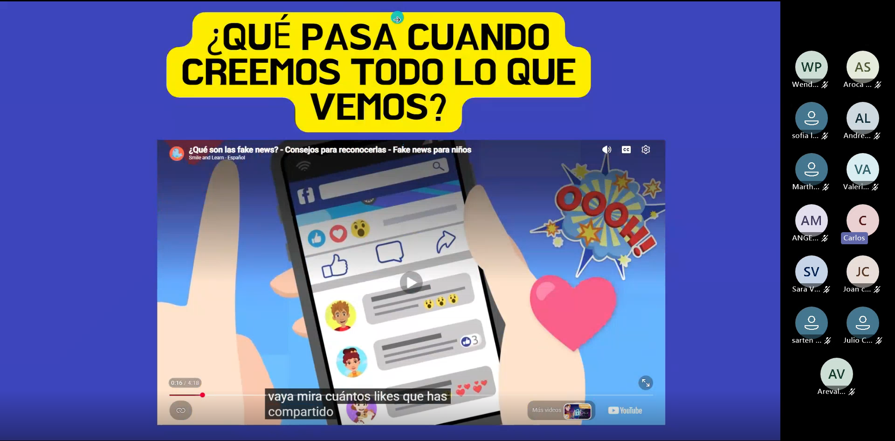
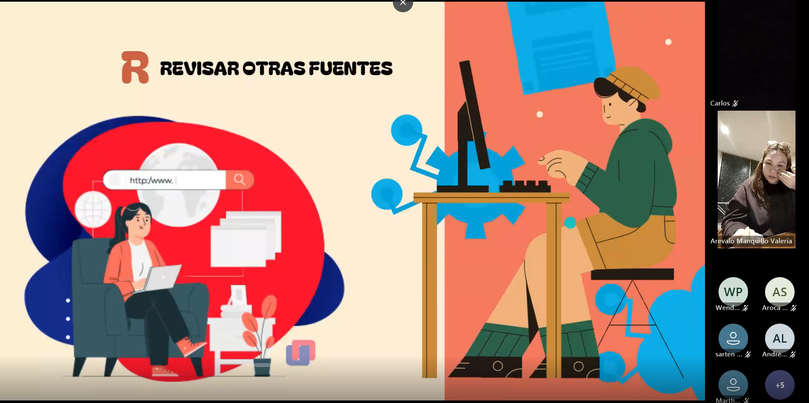
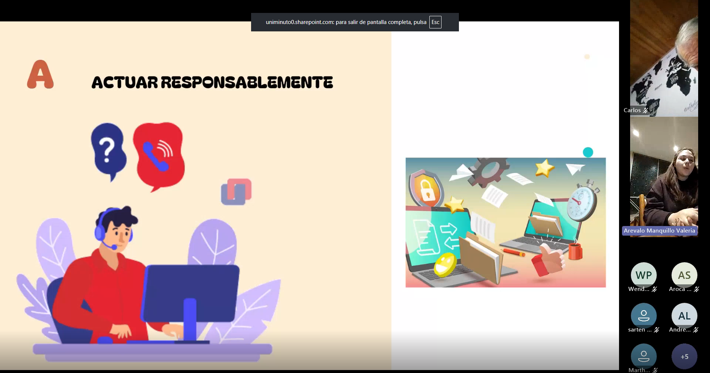

Contexto de la reunión
La primera reunión marcó el inicio del proceso de formación del proyecto Fiscalía Digital. La sesión fue orientada por Valeria Arévalo Manquillo y reunió a los participantes para presentar la metodología de trabajo, introducir el concepto de ciudadanía digital y promover una primera reflexión sobre la forma en que las personas consumen, comparten y verifican información en Internet.
El análisis de esta reunión se construyó a partir de la transcripción oficial de la grabación y de los momentos con mayor participación identificados durante el desarrollo de la sesión, permitiendo documentar las evidencias más relevantes del proceso de aprendizaje.
Ficha técnica
- Reunión: 1
- Tema principal: Ciudadanía digital y desinformación
- Modalidad: Virtual sincrónica
- Plataforma: Microsoft Teams
- Facilitadora: Valeria Arévalo Manquillo
- Duración aproximada: 1 hora y 5 minutos
Objetivos desarrollados
Comprensión del proyecto
Presentar la estrategia Fiscalía Digital y la metodología de trabajo para las cuatro sesiones de capacitación.
Ciudadanía digital
Reflexionar sobre el comportamiento responsable en Internet y el papel del ciudadano en los entornos digitales.
Verificación de información
Introducir herramientas y criterios para analizar la veracidad de la información antes de compartirla.
Evidencias de la reunión
A continuación se documentan los siete momentos de mayor participación identificados durante la reunión, los cuales evidencian la interacción de los asistentes, la construcción colectiva de conceptos y la aplicación práctica de los contenidos trabajados durante la sesión.
Evidencia 1 · ¿Qué entendemos por “Fiscalía Digital”?
Minuto de referencia
07:30 – 08:55
En este momento de la reunión, la facilitadora invitó a los participantes a responder qué entendían por “Fiscalía Digital”. A partir de esta pregunta, se desarrolló una conversación colectiva en la que diferentes asistentes aportaron sus propias interpretaciones del concepto.
Sarten quemado, Sofía López y Andrey López participaron activamente explicando qué representa una fiscalía y cómo podría relacionarse con el entorno digital. La facilitadora retomó sus respuestas para conectar las ideas de investigación, recopilación de pruebas, análisis de evidencias y búsqueda de la verdad con el propósito del proyecto.
Evidencia 2 · La huella digital y nuestros hábitos en Internet
Minuto de referencia
10:09 – 16:31

La facilitadora orientó una reflexión sobre los hábitos cotidianos relacionados con el uso de Internet y del teléfono celular, invitando a los participantes a compartir cuánto tiempo permanecen conectados y con qué frecuencia revisan sus dispositivos móviles.
Andrey López, Sarten quemado, Sofía López y Wendy participaron desde sus experiencias personales. Uno de los aportes más representativos fue el de Sarten quemado, quien manifestó revisar el celular aproximadamente cincuenta veces al día, mientras que Sofía y Wendy reconocieron un uso igualmente frecuente.
Evidencia 3 · Identificación de imágenes y noticias generadas con IA
Minuto de referencia
25:24 – 29:00

Como parte de las actividades prácticas de la sesión, la facilitadora presentó una dinámica en la que los participantes debían identificar cuál de varias imágenes o noticias había sido generada mediante inteligencia artificial.
La actividad se desarrolló mediante respuestas y votación del grupo, seguida de una discusión sobre la importancia de verificar el origen de la información y de analizar los elementos visuales antes de aceptar un contenido como verdadero.
Evidencia 4 · ¿Qué significa ser ciudadanos digitales?
Minuto de referencia
29:00 – 30:00

En este segmento, Andrey López explicó qué entendía por ciudadanía digital y la relacionó con la participación en procesos digitales, elecciones, trámites y servicios disponibles a través de plataformas tecnológicas.
La facilitadora retomó y amplió su intervención para explicar que la ciudadanía digital implica ejercer derechos y asumir responsabilidades dentro de los entornos digitales, actuando con ética, respeto y pensamiento crítico.
Evidencia 5 · Reflexión sobre riesgos digitales
Minuto de referencia
37:00 – 39:00

Durante esta parte de la reunión, los participantes reflexionaron sobre riesgos presentes en Internet como estafas, noticias falsas, phishing y robo de identidad, relacionando los contenidos de la sesión con situaciones reales que pueden afectar a cualquier usuario.
Aunque también se presentó un inconveniente técnico durante la reproducción de un video, el momento más significativo fue la conversación sobre cómo estos riesgos pueden impactar la vida cotidiana y la necesidad de adoptar medidas de prevención y verificación.
Evidencia 6 · Método VERA: revisión de fuentes y medios
Minuto de referencia
48:00 – 50:00

La facilitadora introdujo el Método VERA y preguntó a los participantes qué fuentes de comunicación utilizan para informarse. En este momento, Sarten quemado desarrolló una reflexión especialmente significativa sobre el amarillismo, los titulares llamativos y la forma en que ciertos medios pueden contribuir a la desinformación.
Su intervención evidenció una capacidad de análisis que fue utilizada por la facilitadora para reforzar la importancia de verificar las fuentes, contrastar la información y evaluar el contexto antes de aceptar una noticia como verdadera.
Evidencia 7 · Aplicación del Método VERA a una información falsa
Minuto de referencia
1:04:00 – 1:05:00

En el cierre de la reunión, la facilitadora planteó un escenario práctico para aplicar el Método VERA. Ante la pregunta sobre qué debería hacerse después de comprobar que una información es falsa, Andrey López respondió que lo correcto era reportarla como publicidad engañosa y dejar de difundirla.
La respuesta fue validada por la facilitadora y utilizada para reforzar el concepto de actuación responsable en los entornos digitales, evidenciando que los participantes ya no solo comprendían el método, sino que podían aplicarlo a una situación concreta.
Resultados observados durante la reunión
La primera reunión permitió evidenciar una participación activa de los asistentes, así como una apropiación inicial de conceptos relacionados con ciudadanía digital, desinformación, verificación de información y pensamiento crítico. A través de las actividades desarrolladas, los participantes comenzaron a asumir el papel de Investigadores Digitales, comprendiendo la importancia de analizar, verificar y actuar de manera responsable frente a la información que circula en Internet.
Resultado principal
La reunión logró establecer las bases conceptuales del proyecto Fiscalía Digital, fortalecer la participación colaborativa del grupo e introducir el Método VERA como herramienta práctica para enfrentar la desinformación y promover una ciudadanía digital responsable.
Continúa explorando el repositorio
Has finalizado la documentación correspondiente a la Reunión 1. Puedes regresar al repositorio principal de sesiones o continuar con la Reunión 2, donde se desarrollan las actividades relacionadas con verificación de información, interpretación de páginas web y análisis de herramientas digitales para comprobar la autenticidad de los contenidos.